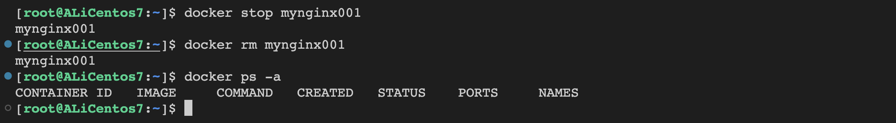
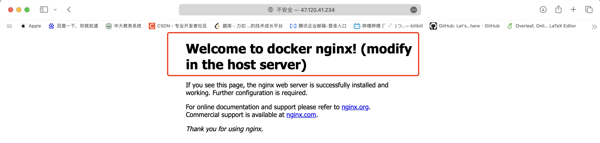

第六章-容器-二
容器的操作案例
容器的基本操作
拉取的同时启动一个容器。
查看容器的信息，查看是否运行正常。

docker container inspect mynginx001 > tmp.json # 查看信息，重定向到一个json文件中[ { "Id": "6a1a254beda42a72127867e68474c30673829bbdcdaf5f6c4a3ac05aab5355e0", "Created": "2023-09-15T08:44:54.599522581Z", "Path": "/docker-entrypoint.sh", "Args": [ "nginx", "-g", "daemon off;" ], "State": { "Status": "running", "Running": true, "Paused": false, "Restarting": false, "OOMKilled": false, "Dead": false, "Pid": 532, "ExitCode": 0, "Error": "", "StartedAt": "2023-09-15T08:44:55.79180895Z", "FinishedAt": "0001-01-01T00:00:00Z" }, "Image": "sha256:08a1cbf9c69edd2ab8e5250ae97703f60b9393fc5a4827cedda4b7387a5cfc6a", "ResolvConfPath": "/data/var/lib/docker/containers/6a1a254beda42a72127867e68474c30673829bbdcdaf5f6c4a3ac05aab5355e0/resolv.conf", "HostnamePath": "/data/var/lib/docker/containers/6a1a254beda42a72127867e68474c30673829bbdcdaf5f6c4a3ac05aab5355e0/hostname", "HostsPath": "/data/var/lib/docker/containers/6a1a254beda42a72127867e68474c30673829bbdcdaf5f6c4a3ac05aab5355e0/hosts", "LogPath": "/data/var/lib/docker/containers/6a1a254beda42a72127867e68474c30673829bbdcdaf5f6c4a3ac05aab5355e0/6a1a254beda42a72127867e68474c30673829bbdcdaf5f6c4a3ac05aab5355e0-json.log", "Name": "/mynginx001", "RestartCount": 0, "Driver": "overlay2", "Platform": "linux", "MountLabel": "", "ProcessLabel": "", "AppArmorProfile": "", "ExecIDs": null, "HostConfig": { "Binds": null, "ContainerIDFile": "", "LogConfig": { "Type": "json-file", "Config": {} }, "NetworkMode": "default", "PortBindings": { "80/tcp": [ { "HostIp": "", "HostPort": "8080" } ] }, "RestartPolicy": { "Name": "no", "MaximumRetryCount": 0 }, "AutoRemove": false, "VolumeDriver": "", "VolumesFrom": null, "ConsoleSize": [ 31, 108 ], "CapAdd": null, "CapDrop": null, "CgroupnsMode": "host", "Dns": [], "DnsOptions": [], "DnsSearch": [], "ExtraHosts": null, "GroupAdd": null, "IpcMode": "private", "Cgroup": "", "Links": null, "OomScoreAdj": 0, "PidMode": "", "Privileged": false, "PublishAllPorts": false, "ReadonlyRootfs": false, "SecurityOpt": null, "UTSMode": "", "UsernsMode": "", "ShmSize": 67108864, "Runtime": "runc", "Isolation": "", "CpuShares": 0, "Memory": 0, "NanoCpus": 0, "CgroupParent": "", "BlkioWeight": 0, "BlkioWeightDevice": [], "BlkioDeviceReadBps": [], "BlkioDeviceWriteBps": [], "BlkioDeviceReadIOps": [], "BlkioDeviceWriteIOps": [], "CpuPeriod": 0, "CpuQuota": 0, "CpuRealtimePeriod": 0, "CpuRealtimeRuntime": 0, "CpusetCpus": "", "CpusetMems": "", "Devices": [], "DeviceCgroupRules": null, "DeviceRequests": null, "MemoryReservation": 0, "MemorySwap": 0, "MemorySwappiness": null, "OomKillDisable": false, "PidsLimit": null, "Ulimits": null, "CpuCount": 0, "CpuPercent": 0, "IOMaximumIOps": 0, "IOMaximumBandwidth": 0, "MaskedPaths": [ "/proc/asound", "/proc/acpi", "/proc/kcore", "/proc/keys", "/proc/latency_stats", "/proc/timer_list", "/proc/timer_stats", "/proc/sched_debug", "/proc/scsi", "/sys/firmware" ], "ReadonlyPaths": [ "/proc/bus", "/proc/fs", "/proc/irq", "/proc/sys", "/proc/sysrq-trigger" ] }, "GraphDriver": { "Data": { "LowerDir": "/data/var/lib/docker/overlay2/23661dd6ebb5c432ce3f1448ac08d038e59ad101b29efe29addefd165b4104a0-init/diff:/data/var/lib/docker/overlay2/e5d076862da7aee474d0550d60c5851dc793757e7ed03fa5fb817c2fa5f1a408/diff:/data/var/lib/docker/overlay2/0351e0d22c137be4b1410c4ba4266d7f7933196345b27d5d9bc22045dfee3d75/diff:/data/var/lib/docker/overlay2/72ccc6676d75d479366ce8182c4ce7be156e8b6e3543ce2e6732b6274a79e4d7/diff:/data/var/lib/docker/overlay2/67bfca339fd7a87963e91b7eb415c9599dbcc18ce95cdbf8c9ef2335e38e5d1a/diff:/data/var/lib/docker/overlay2/9a7b148946cfeb69cb1037446f607a2da6a59c0f1bda46e7d68ed378a8f760e9/diff:/data/var/lib/docker/overlay2/23faacc4402854b8f869f2398bd4efcf323359b9e04830f7c177936c216a6de4/diff", "MergedDir": "/data/var/lib/docker/overlay2/23661dd6ebb5c432ce3f1448ac08d038e59ad101b29efe29addefd165b4104a0/merged", "UpperDir": "/data/var/lib/docker/overlay2/23661dd6ebb5c432ce3f1448ac08d038e59ad101b29efe29addefd165b4104a0/diff", "WorkDir": "/data/var/lib/docker/overlay2/23661dd6ebb5c432ce3f1448ac08d038e59ad101b29efe29addefd165b4104a0/work" }, "Name": "overlay2" }, "Mounts": [], "Config": { "Hostname": "6a1a254beda4", "Domainname": "", "User": "", "AttachStdin": false, "AttachStdout": false, "AttachStderr": false, "ExposedPorts": { "80/tcp": {} }, "Tty": false, "OpenStdin": false, "StdinOnce": false, "Env": [ "PATH=/usr/local/sbin:/usr/local/bin:/usr/sbin:/usr/bin:/sbin:/bin", "NGINX_VERSION=1.22.0", "NJS_VERSION=0.7.6", "PKG_RELEASE=1~bullseye" ], "Cmd": [ "nginx", "-g", "daemon off;" ], "Image": "nginx:1.22.0", "Volumes": null, "WorkingDir": "", "Entrypoint": [ "/docker-entrypoint.sh" ], "OnBuild": null, "Labels": { "maintainer": "NGINX Docker Maintainers <docker-maint@nginx.com>" }, "StopSignal": "SIGQUIT" }, "NetworkSettings": { "Bridge": "", "SandboxID": "555fb0c11fc23cf0aa2b6b3a21399152208941da805c2428a1a2c844aa3871ec", "HairpinMode": false, "LinkLocalIPv6Address": "", "LinkLocalIPv6PrefixLen": 0, "Ports": { "80/tcp": [ { "HostIp": "0.0.0.0", "HostPort": "8080" }, { "HostIp": "::", "HostPort": "8080" } ] }, "SandboxKey": "/var/run/docker/netns/555fb0c11fc2", "SecondaryIPAddresses": null, "SecondaryIPv6Addresses": null, "EndpointID": "9b30e85ff2551851435264a5ef8517887c4a5f38603cba90fe9dd1a4ca1bbdde", "Gateway": "172.17.0.1", "GlobalIPv6Address": "", "GlobalIPv6PrefixLen": 0, "IPAddress": "172.17.0.2", "IPPrefixLen": 16, "IPv6Gateway": "", "MacAddress": "02:42:ac:11:00:02", "Networks": { "bridge": { "IPAMConfig": null, "Links": null, "Aliases": null, "NetworkID": "c628e2b0d777ee8674106b75d24bc0ba856047abced6d2ad84e101611461092a", "EndpointID": "9b30e85ff2551851435264a5ef8517887c4a5f38603cba90fe9dd1a4ca1bbdde", "Gateway": "172.17.0.1", "IPAddress": "172.17.0.2", "IPPrefixLen": 16, "IPv6Gateway": "", "GlobalIPv6Address": "", "GlobalIPv6PrefixLen": 0, "MacAddress": "02:42:ac:11:00:02", "DriverOpts": null } } } }]清理一个容器。

容器的状态迁移
创建容器。

此时状态是Created。
现在是运行态。
当然，我们还可以做各种操作，让他暂停，启动等等。
容器批量处理技巧
容器的批量搜索
| 命令 | 解释 |
|---|---|
docker container ls -qf name=xxx | 根据名称过滤得到容器编号 |
docker container ls --filter status=running | 根据状态过滤容器信息 |
docker container ls -aq | 静默获取全部容器id |
docker container ls --filter ancestor=xxx | 过滤镜像名为xxx的容器信息 |
-a ：表示打印所有的容器信息， 包括正在运行和已经退出的-q : 表示只返回容器 ID-f : 表示基于给的条件过滤 等价于 --filter 选项先启动一些容器，做一些准备先。
停掉一个。
开始过滤。
过滤名字为mynginx003的容器。
[root@ALiCentos7:~]$ docker ps -f name=mynginx003CONTAINER ID IMAGE COMMAND CREATED STATUS PORTS NAMESd4f00f4a7544 nginx:1.21.4 "/docker-entrypoint.…" 2 minutes ago Up 2 minutes 80/tcp mynginx003[root@ALiCentos7:~]$ 过滤正在运行的容器。
[root@ALiCentos7:~]$ docker ps -f status=runningCONTAINER ID IMAGE COMMAND CREATED STATUS PORTS NAMES64f920d38e0f nginx:1.21.4 "/docker-entrypoint.…" 2 minutes ago Up 2 minutes 80/tcp mynginx004d4f00f4a7544 nginx:1.21.4 "/docker-entrypoint.…" 2 minutes ago Up 2 minutes 80/tcp mynginx003447d44e1d5b3 nginx:1.22.0 "/docker-entrypoint.…" 3 minutes ago Up 3 minutes 80/tcp mynginx00238b14c5cd3d3 nginx:1.21.4 "/docker-entrypoint.…" 17 minutes ago Up 16 minutes 0.0.0.0:8080->80/tcp, :::8080->80/tcp mynginx001[root@ALiCentos7:~]$ 过滤镜像是nginx:1.21.4的容器。
[root@ALiCentos7:~]$ docker ps -f ancestor=nginx:1.21.4 CONTAINER ID IMAGE COMMAND CREATED STATUS PORTS NAMES64f920d38e0f nginx:1.21.4 "/docker-entrypoint.…" 3 minutes ago Up 3 minutes 80/tcp mynginx004d4f00f4a7544 nginx:1.21.4 "/docker-entrypoint.…" 4 minutes ago Up 4 minutes 80/tcp mynginx00338b14c5cd3d3 nginx:1.21.4 "/docker-entrypoint.…" 19 minutes ago Up 18 minutes 0.0.0.0:8080->80/tcp, :::8080->80/tcp mynginx001[root@ALiCentos7:~]$-q就是只返回id
[root@ALiCentos7:~]$ docker ps -f ancestor=nginx:1.21.4 -q64f920d38e0fd4f00f4a754438b14c5cd3d3[root@ALiCentos7:~]$容器批量操作
我们拿到这个id之后，就可以对容器进行批量的操作了。
docker stop `docker ps -q` # 把docker ps -q的搜索结果送给docker stop容器交互模式
attached模式

日志全部打印到bash上了，而且此时^C或者断网，容器都会退出。
attach模式一般不能用于生产环境，一般用于生产环境。
detached模式
不受bash的影响，在后台运行，是一个守护进程。
那么如何查看后台运行容器的日志呢？
attach到一个detached运行的容器上
xxxxxxxxxxdocker attach mynginx001此时这个容器就变成前台运行了。
interactive模式
交互模式。
但此时这个nginx是没有启动的，我们需要在容器的bash里面手动启动一下。
当然，也可以用docker exec命令，去和一个后台运行的容器进行交互。
容器与宿主机内容拷贝
我们先从把容器内部的index.html拷贝到宿主机上，然后在宿主机上经过一定修改之后，再拷贝回容器里面去。
先启动一个容器。
在容器里面找到这个index.html
把东西拷贝到本地。
给标题做一个修改。
拷贝回去。
现在再访问一下看看。

已经完成了修改。
注意：不支持在容器之间互相拷贝文件。
容器自动删除
带上--rm选项
创建一个前台运行到容器，退出，看看会发生什么
创建一个后台运行到容器，
docker stop之后，看看会发生什么

此时我们发现，已经自动删除了。
--rm选项在工作时一定要慎用，万一容器停了，东西就没了。
容器自动重启
容器重启选项如下：
xxxxxxxxxxdocker run --restart=no [容器名] :默认值不自动重启xxxxxxxxxxdocker run --restart=on-failure:3 [容器名] : on-failure # 若容器的退出状态非 0，则docker 自动重启容器，还可以指定重启次数，若超过指定次数未能启动容器则放弃。xxxxxxxxxxdocker run --restart=always [容器名] :always # 容器退出时总是重启xxxxxxxxxxdocker run --restart=unless-stopped [容器名] unless-stopped # 容器退出时总是重启，但不考虑 Docker 守护进程启动时就已经停止的容器。如果容器启动时没有设置–restart 参数，则通过下面命令进行更新：
xxxxxxxxxxdocker update --restart=always [容器名]容器环境变量设置
前面学命令的时候提到过了，-e选项可以设置环境变量。
如果要设置多个，可以有两种办法。
用多个
-e选项设置用一个配置文件
设置配置文件。
容器详情查看
xxxxxxxxxxdocker container inspect 容器容器执行单行命令
我们可以直接借助 docker 的容器环境执行一些命令，比如容器中有某个命令而宿主机上没有这个时候借助容器可以完成某些任务。
容器镜像导入导出
docker export和docker import
docker save和docker load
容器日志查看
可见docker logs命令详解。
容器资源查看
可见docker top和docker stats都命令详解。